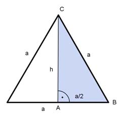

Aufgabe 67 Ein regelmäßiges dreiseitiges Prisma hat eine Oberfläche O von 20 cm² und eine Seitenlänge a von 2 cm. Wie groß ist seine Länge l?  O = 2 * G + M a * h G = -------- 2 M = 3 * a * l Satz von Pythagoras im Dreieck ABC: a² = (a/2)² + h² |-(a/2)² h² = a² - (a/2)² h² = a² - a²/4 3 h² = --- a² |√ 4 a 2 cm h = --- * √3 = ------- * √3 = 1,73 cm 2 2 2 cm * 1,73 cm G = ------------------ = 1,73 cm² 2 20 cm² = 2 * 1,73 cm² + 3 * 2 cm * l 20 cm² = 3,46 cm² + 6 cm * l - 3,46 cm² 16,54 cm² = 6 cm * l |:6 cm l = 2,75 cm